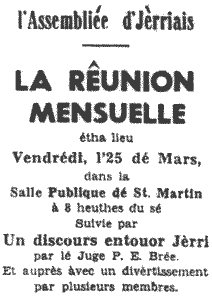

 La rêunion mensuelle eut lieu vendrédi, l'25 dé Mars, dans la Salle Publique dé St. Martin et passant 100 membres lus y rêunitent.
Un coup qué l'rapport du mais d'Févri fut liu et siez nouvieaux membres d'êlus, lé Président fît la beinv'nue au Juge P. E. Brée, qui 'tait v'nu pour nos pasler. J'tions hardi favorisés d'aver un tel bouan orateu à nos adréchi. L'Juge Brée nos racontit des mémouaithes dé san janne temps, et nos fit des compathaisons d'avec chu temps la auve lé tchein d'à ch't heu. Nou' sé d'mande lé sien qui vaut l'mus, mais ch'est bein seux qué seul'ment des gens d'la sagesse et la capacité au Juge Brée pouorraient faithe une vraie décision.
En nos disant comment qu' les choses avaient tellement changi, l'Juge fit, eune bouanne compathaison : Quand i' 'tait janne les garçons 'taient habilyis en cotillons, même jusqu' auprès qu'i' pouvaient marchi, mais à ch't heu' les filles 'taient jutchies en braies d'vant pouver marchi! Eune autre: Lé temps passé i'y avait tréjous d's élections et tout plein d'excitement avec, mais anniet ch'est bein difficile dé trouver les candidats pour les postes vacantes.
Ch'tait bein intéressant d'ouï les vièrs ditons - ds éthangnyis dans les mansardes, pour iun ; des vièrs mots - d's "animaux " ou "bétes à saie" pour des couochons. J'eunmes eune bouanne description du travas du, temps passé : tailli du vrai, touanner à siez ch'vaus, s'tchi du vrai pour lé brûler pour en sauver les chendres pour servi comme angrès pour lé grain, battre à la grange, faithe lé beurre et boulandgi sus les fermes, laver l'linge et traithe les vacques sans machines, être obligis d'aller à pid pour dé longues courses, vendre les patates par lé cabot et bein d'autres.
En r'mèrciant l'Juge Brée dé la part dé L'Assembliée, lé Connétablye Ahier nos dit deus'trais p'tits buts bein amusants.
Plusieurs des damnes de L'Assembliée nos servitent du thée et des gallettes, et auprès d'autres membres nos amûsitent hardi auve des imitations dé bein d's otchupations d'à ch't heu' ; chenn'chin étout fut intérêssant pour les membres qui 'taient à êprouver à d'viner chein qu'i' faithaient.
Lé Sieur Gibaut ermèrcyit l'Connètablye pour la salle et annoncit un service français à l'Eglyise dé St. Louothains, lundi, l'11 d'Avri, et la préchaine rêunion dans l'êcole dé la Chapelle dé Great Union Road., quand des membres dé L'Assembliée erpréthant'tons l'invasion d'Jèrri en 1405.
Evening Post 2/4/1960
Viyiz étout: